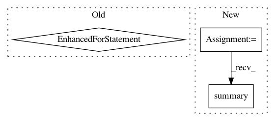

7d6fcb1cfbf368a8c255b0dbab4b1f0ec4d2a48c,plasma/models/builder.py,ModelBuilder,build_model,#ModelBuilder#Any#Any#,73
Before Change
//x_in = TimeDistributed(Dense(2*(num_0D+num_1D)),activation="relu") (x_in)
// x = TimeDistributed(Dense(2*(num_0D+num_1D)))
// model.add(TimeDistributed(Dense(num_density_channels,bias=True),batch_input_shape=batch_input_shape))
for _ in range(model_conf["rnn_layers"]):
x_in = rnn_model(rnn_size, return_sequences=return_sequences,//batch_input_shape=batch_input_shape,
stateful=stateful,kernel_regularizer=l2(regularization),recurrent_regularizer=l2(regularization),
bias_regularizer=l2(regularization),dropout=dropout_prob,recurrent_dropout=dropout_prob) (x_in)
x_in = Dropout(dropout_prob) (x_in)
if return_sequences:
//x_out = TimeDistributed(Dense(100,activation="tanh")) (x_in)
x_out = TimeDistributed(Dense(1,activation=output_activation)) (x_in)
else:
After Change
pre_rnn_1D = MaxPooling1D(pool_size) (pre_rnn_1D)
pre_rnn_1D = Flatten() (pre_rnn_1D)
pre_rnn_1D = Dense(dense_size,kernel_regularizer=l2(dense_regularization),bias_regularizer=l2(dense_regularization),activity_regularizer=l2(dense_regularization)) (pre_rnn_1D)
if use_batch_norm: pre_rnn_1D = BatchNormalization()(pre_rnn_1D)
pre_rnn_1D = Activation("relu")(pre_rnn_1D)
pre_rnn_1D = Dense(dense_size//4,kernel_regularizer=l2(dense_regularization),bias_regularizer=l2(dense_regularization),activity_regularizer=l2(dense_regularization)) (pre_rnn_1D)
if use_batch_norm: pre_rnn_1D = BatchNormalization()(pre_rnn_1D)
pre_rnn_1D = Activation("relu")(pre_rnn_1D)
pre_rnn = Concatenate() ([pre_rnn_0D,pre_rnn_1D])
else:
pre_rnn = pre_rnn_input
if model_conf["rnn_layers"] == 0 or model_conf["extra_dense_input"]:
pre_rnn = Dense(dense_size,activation="relu",kernel_regularizer=l2(dense_regularization),bias_regularizer=l2(dense_regularization),activity_regularizer=l2(dense_regularization)) (pre_rnn)
pre_rnn = Dense(dense_size//2,activation="relu",kernel_regularizer=l2(dense_regularization),bias_regularizer=l2(dense_regularization),activity_regularizer=l2(dense_regularization)) (pre_rnn)
pre_rnn = Dense(dense_size//4,activation="relu",kernel_regularizer=l2(dense_regularization),bias_regularizer=l2(dense_regularization),activity_regularizer=l2(dense_regularization)) (pre_rnn)
pre_rnn_model = Model(inputs = pre_rnn_input,outputs=pre_rnn)
pre_rnn_model.summary()
x_input = Input(batch_shape = batch_input_shape)
x_in = TimeDistributed(pre_rnn_model) (x_input)
if use_bidirectional:
In pattern: SUPERPATTERN
Frequency: 3
Non-data size: 3
Instances
Project Name: PPPLDeepLearning/plasma-python
Commit Name: 7d6fcb1cfbf368a8c255b0dbab4b1f0ec4d2a48c
Time: 2018-01-12
Author: asvyatkovskiy@gmail.com
File Name: plasma/models/builder.py
Class Name: ModelBuilder
Method Name: build_model
Project Name: ray-project/ray
Commit Name: d192ef06119f3eccf569a844b30976db99cfa0f6
Time: 2020-03-10
Author: rliaw@berkeley.edu
File Name: python/ray/util/sgd/torch/training_operator.py
Class Name: TrainingOperator
Method Name: train_epoch
Project Name: keras-team/keras
Commit Name: 33ff9dbce230068e65dedb2f41a00c39c70bef93
Time: 2016-08-17
Author: francois.chollet@gmail.com
File Name: tests/keras/layers/test_wrappers.py
Class Name:
Method Name: test_Bidirectional